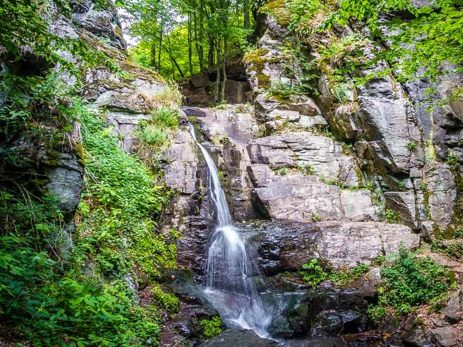
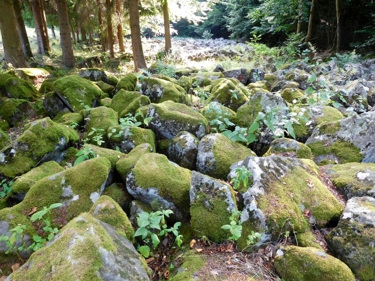
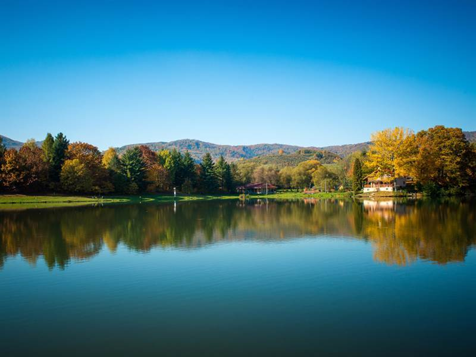
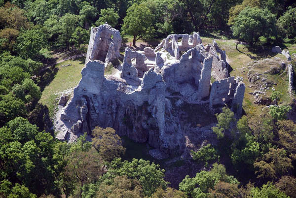
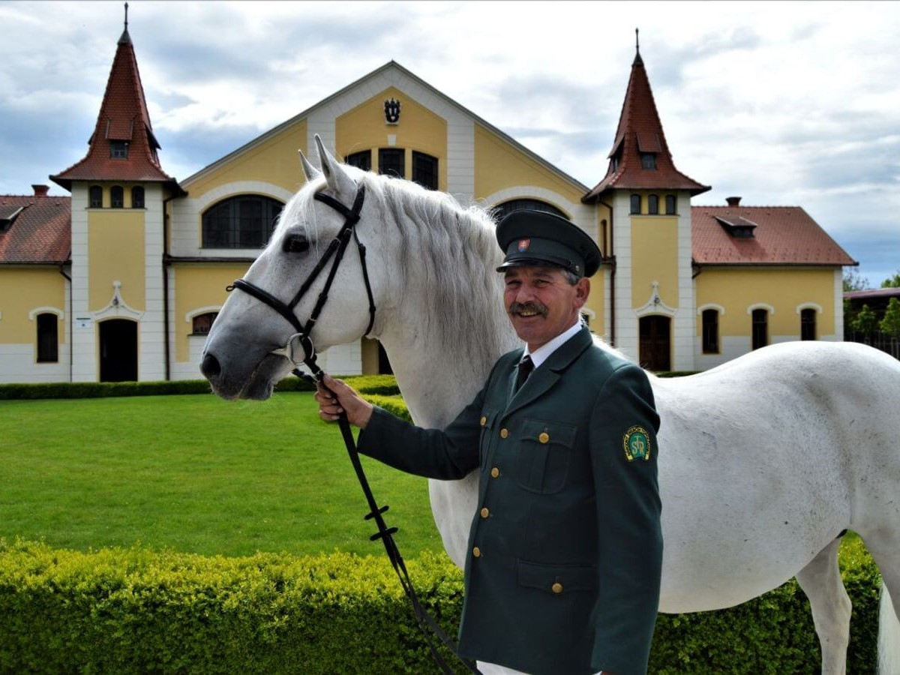
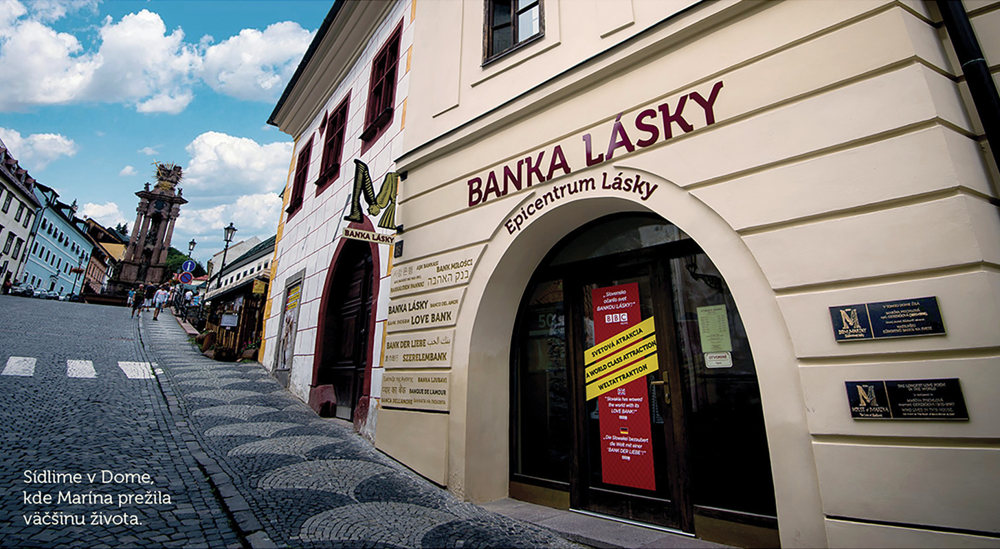
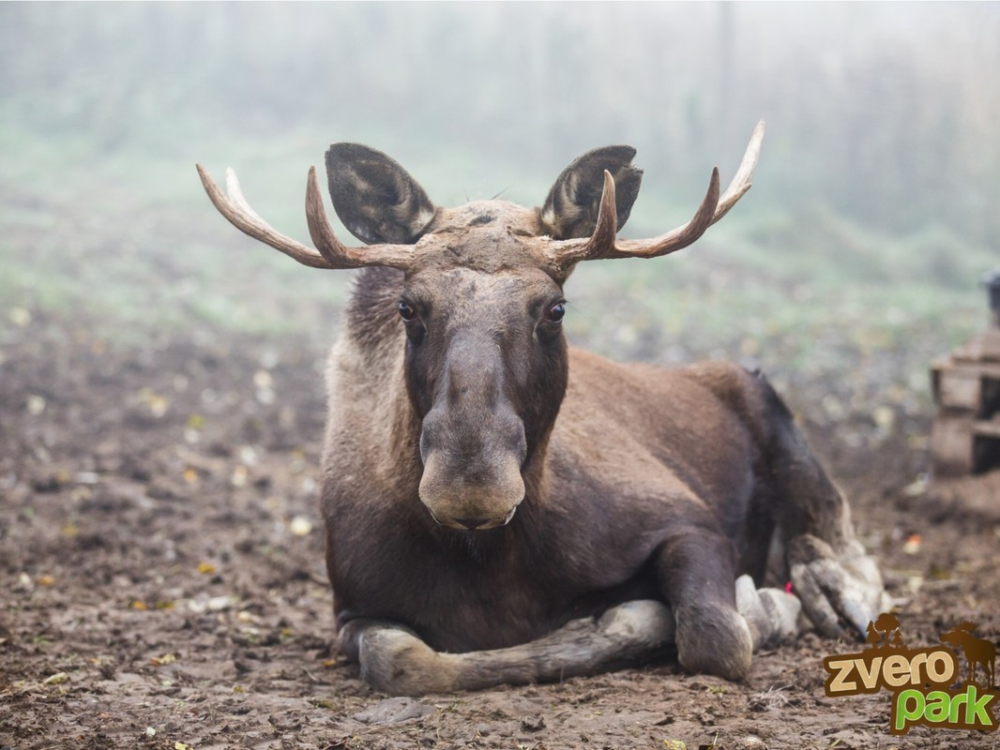

Starohutský vodopád
Ak ste niekedy zablúdili do končín v okolí mesta Nová Baňa, možno ste narazili na Starohutský vodopád. Starohutský vodopád s výškou približne 5 metrov leží na konci osady Stará Huta (časť Novej Bane). Mnohí ho považujú za najkrajší z vodopádov, ktorý nájdete v sopečných pohoriach stredného Slovenska.
Andezitové kamenné more
Andezitové kamenné more je národná prírodná pamiatka v katastrálnom území obce Malá Lehota v okrese Žarnovica, v pohorí Tribeč. Má rozlohu 1,4 ha, vyhlásená bola v roku 1975. Ide o vedecky zaujímavý zachovaný zvyšok čela rozpadnutého lávového prúdu s andezitmi.
Jazero Tajch Nová Baňa
Umelá vodná nádrž Tajch sa nachádza v časti mesta Nová Baňa nazývanej Štále. Vodná nádrž je súčasťou rozsiahlejšieho rekreačného areálu. Vybudovaná bola v rokoch 1792 – 1794 ako súčasť bývalého banského vodohospodárskeho systému.
Hrad Hrušov
Severne od známej vinosadníckej obce Topoľčianky po stáročia stojí, dnes už zrúcanina hradu Hrušov. Jeho zvyšky mohutných múrov a vežičiek sa vypínajú na vrchu Skalka vo výške 488 m.n.m. Hrad Hrušov tvoria zrúcaniny gotického hradu z 13.storočia, ktorý bol zničený v roku 1708. Zachoval sa pôdorys hradu, obytné jadro s predhradím a niektoré veže.
Národný žrebčín Topoľčianky
Národný žrebčín Topoľčianky právom patrí medzi najvýznamnejšie svetové žrebčíny. Je špecializovaným zariadením pre chov koní v objektoch s premyslenou architektúrou, urbanistickým riešením a citlivým zakomponovaním historicky vzácnych budov do okolitej prírody.
Banka Lásky - Dom Sládkovičovej Maríny
Všetci si určite pamätáme zo školských čias báseň o nenaplnenej láske básnika Andreja Sládkoviča k Maríne Pischlovej. Viete však, kde sa nachádza jej rodný dom? Nájdete ho na Námestí Svätej Trojice v Banskej Štiavnici, kde dnes slúži ako zážitková expozícia Epicentrum lásky, ktorá je venovaná najdlhšej ľúbostnej básni na svete, a zároveň je zapísaná aj ako svetový rekord organizácii World Record Academy.
Zveropark
Zveropark v Revištskom Podzámčí je miesto, kde je príroda krásna ako z rozprávky, zaujímavé zvieratká, zurčiaci vodopád, jazero plné rýb, lúka ako stvorená pre piknik a pokoj na oddych.
Veľký Inovec

Očarujúce pohorie Pohronský Inovec je spleťou atraktívnych turistických chodníčkov, ktoré ponúkajú vynikajúcu, a pritom nenáročnú turistiku. Najvyšším bodom tohto pohoria je vrch Veľký Inovec (901 m.n.m), ktorý sa vypína neďaleko Novej Bane, a ktorý tiež ponúka krajinársky veľmi atraktívnu a v podstate nenáročnú turistiku.